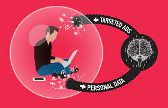
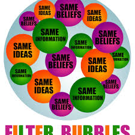

Sociale Bubbel
Wat is een Sociale Bubbel?
Een sociale bubbel is het resultaat van een gepersonaliseerde zoekopdracht met behulp van algoritmen. Op basis van zoekgeschiedenis,
koopgedrag, locaties, e-mailverkeer, berichten op social media platforms zoals Facebook, etc. wordt een profiel van iemand
geschetst. Een dergelijk profiel omvat de voorkeuren en interesses van de persoon. Op deze manier kunnen netwerken gerichte
advertenties aanbieden en kan YouTube bijvoorbeeld ook meer gerichte video's voorstellen. Het gevolg hiervan is dat veel
mensen in een zogenaamde bubble terechtkomen, vandaar de term sociale bubbel. Zo'n zogenaamde filterbubbel ontstaat wanneer
iemand geen bronnen buiten het gefilterde aanbod gebruikt.
Hoe ontstaan Sociale Bubbels?
Youtube en Instagram, maar ook alle andere social mediaplatforms, maken gebruik van algoritmes. Algoritmes worden vaak genoemd als het gaat om grote datasets die door technologie worden verzameld. Algoritmes kunnen eruit zien als een kookrecept of als een wiskundige formule. Gegevens omvatten cijfers, foto's, video's enzovoort. Deze gegevens worden gebruikt als input voor algoritmes.
Algoritmes hebben ook verschillende functies: prioriteren, classificeren en filteren. Bij sociale bubbels draait het eigenlijk alleen maar om algoritmes van je interesses te filteren. Ze houden bij wat je graag bekijkt zoals video's op youtube en je koopgedrag op bol.com. Kort samengevat, algoritmes houden je kijk- en zoekgeschiedenis bij, slaan deze gegevens op en filteren wat niet bij jouw interesses past.

Voorbeeld
Om het duidelijker te maken hoe algoritmen werken, volgt hier een voorbeeld:
Iemand is zijn eten aan het opwarmen en plotseling gaat zijn magnetron kapot. Hij wilt zo snel mogelijk een nieuwe en goedkope magnetron en zoekt daarom op Google naar een perfecte magnetron. Algoritmes slaan deze gegevens op waardoor hij op veel verschillende platformen advertenties vindt over magnetrons. Zulke advertenties komen vaak voor op de onderkant/zijkant van je scherm, maar soms kun je ze zelfs op Instagram vinden.
Ik heb zelf ook een klein experiment gedaan om te kijken hoe snel je in een bubbel terecht komt, om te voorkomen dat ik recente zoekopdrachten op mijn eigen account tegenkom heb ik een compleet nieuw account gemaakt. Ik heb op verschillende platformen een account gemaakt om te kijken of ik op elk platform zo'n zoekopdracht terugvindt of één platform overheersend is. In de tabel hieronder vind je de resultaten.
| Zoekopdracht |
Resultaat |
| Gordijnen |
Op geen enkel platform een advertentie wat met een gordijn te maken heeft. |
| Televisie |
Coolblue Televisie advertentie op Instagram |
| Samsung |
Samsung Smartwatch reclame op Youtube |
| Truien |
Zalando kleding advertentie op Tik Tok |
Hoe herken je een Sociale Bubbel?
Een sociale bubbel kan je best eenvoudig herkennen, ook al valt het je meestal niet op. Het belangrijkste kenmerk van zo’n filterbubbel is wanneer je eenzijdige informatie krijgt die jouw waarheid versterkt. Denk hierbij aan bijvoorbeeld de verkiezingen in Amerika, zoek je iets op over Trump, dan krijg je allemaal bronnen over Trump. Daardoor is het moeilijk om een mening over de verkiezingen te krijgen. Je krijgt namelijk geen bronnen over Biden of andere politicus.

Hoe kom je van een bubbel af?
Ook al is het heel moeilijk om dit systeem van algoritmes te vermijden zodat je niet in een sociale bubbel terecht komt, er zijn alsnog verschillende manieren om aan de sociale bubbel te ontsnappen, hier zijn enkele tips:
Lees artikelen waar je het niet mee eens bent. Zo krijgen je gegevens verschillende perspectieven te zien en verklein je de kans om in een bubbel terecht te komen. Kijk ook naar filmpjes waar je weinig interesse in hebt zodat de kans nog een stuk kleiner wordt. Een andere optie is ervoor te zorgen dat Google jouw geschiedenis niet kan bewaren, zo kan het geen zoekopdrachten opslaan en kom je niet in een bubbel terecht.